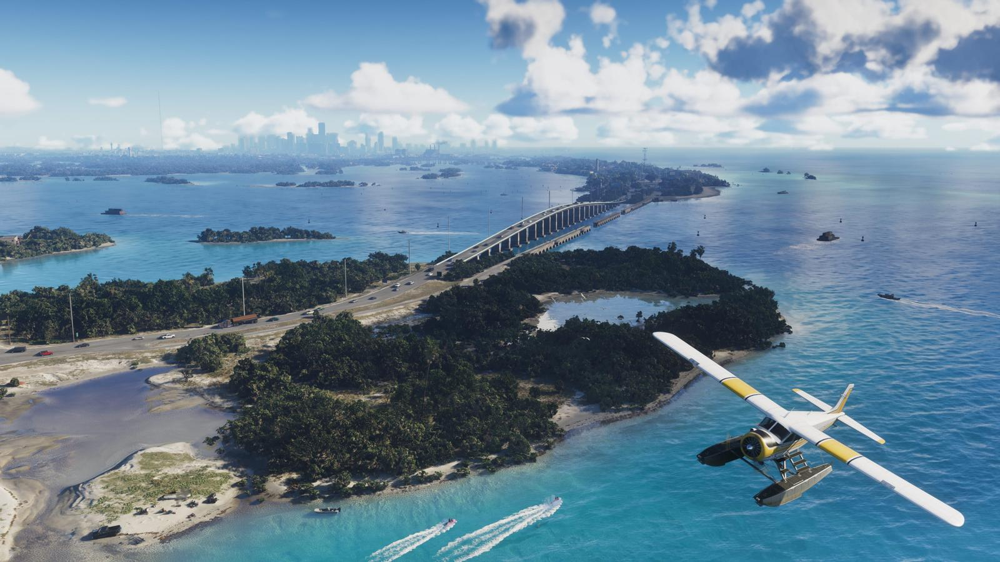
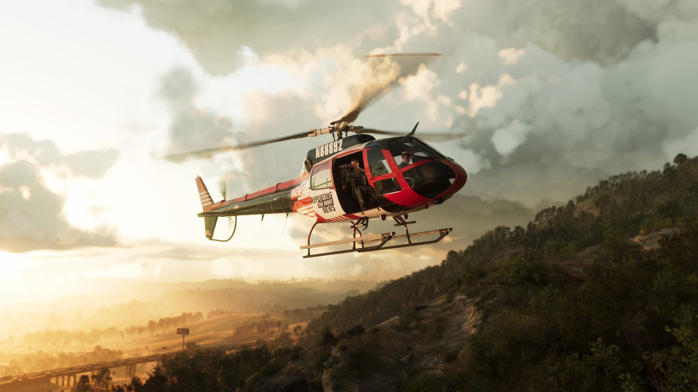

Размер карты GTA 6 по сравнению с GTA 5
Обновлено:

Коротко
- По данным превью, Вайс-Сити примерно в 2 раза больше Лос-Сантоса.
- Весь мир — примерно в 3 раза больше игровой зоны RDR 2.
- Точных цифр в км² Rockstar не называла.
Сравнение
| Что | GTA 6 |
|---|---|
| Вайс-Сити | примерно вдвое больше Лос-Сантоса (GTA 5) |
| Весь мир | примерно втрое больше игровой зоны Red Dead Redemption 2 |
| Регионов | 6 официальных |
Эти оценки дали журналисты, знакомившиеся с игрой. Официальную площадь в километрах Rockstar не публиковала — любые цифры в км² пока неофициальные.

Интерьеры
В игре очень много доступных помещений — магазины, клубы, отели, крыши. Точное число Rockstar не называла.
Источники: Rockstar Games — официальный сайт GTA VI (rockstargames.com/VI), Rockstar Newswire; превью журналистов и официальный геймплейный ролик Rockstar (по данным GTABase, VICE).